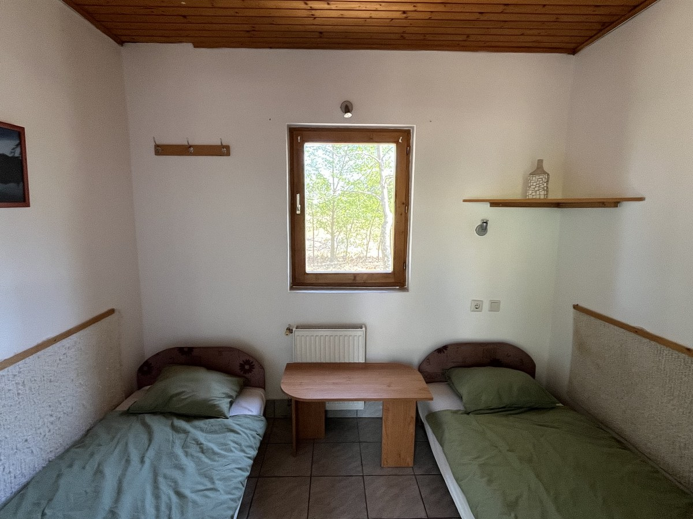
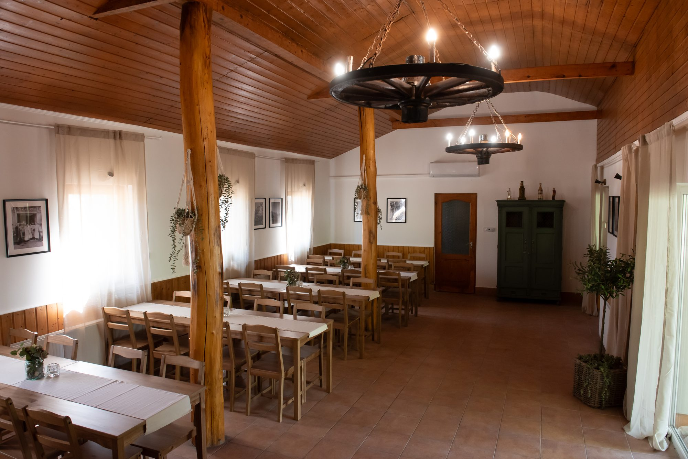

Horgászat
Napijegyes horgászati lehetőség 2,5 hektáros, 4–8 méter mély bányatavunkon.

A Farmer Horgásztó Dunavarsányban, Budapesttől rövid autóútra található. A 2,5 hektáros, 4–8 méter mély bányató több mint 30 éve működik horgásztóként, változatos halállománnyal.
Célunk nyugodt, rendezett környezetet biztosítani azoknak, akik szeretnének kiszakadni a városból, horgászni vagy néhány napot a természetben tölteni.

Természetközeli kikapcsolódás Budapest közelében
Napijegyes horgászati lehetőség 2,5 hektáros, 4–8 méter mély bányatavunkon.

Hagyományos kemencénk szintén használható előzetes egyeztetés alapján.

Egyszerű szobák azoknak, akik több napra érkeznek, vagy a horgászat után helyben maradnának éjszakára.

Sátorozási lehetőség a tó területén. Jó választás egy hétvégi horgászathoz vagy baráti programhoz.

A szabadban főznél? A tó területén bográcsozási lehetőség is rendelkezésre áll.

Különálló rendezvénytermünk családi és baráti összejövetelekhez, születésnapokhoz és kisebb rendezvényekhez bérelhető.
Horgászversenyt szerveznétek? A helyszínt biztosítjuk.
Vállaljuk horgászversenyek lebonyolítását horgászegyesületek, cégek, baráti társaságok és más közösségek számára. A tó céges csapatépítő programok, baráti és egyesületi versenyek helyszíneként is bérelhető.
A részleteket és az igényeket minden esetben előzetesen egyeztetjük.
{kind=link}
{kind=link}